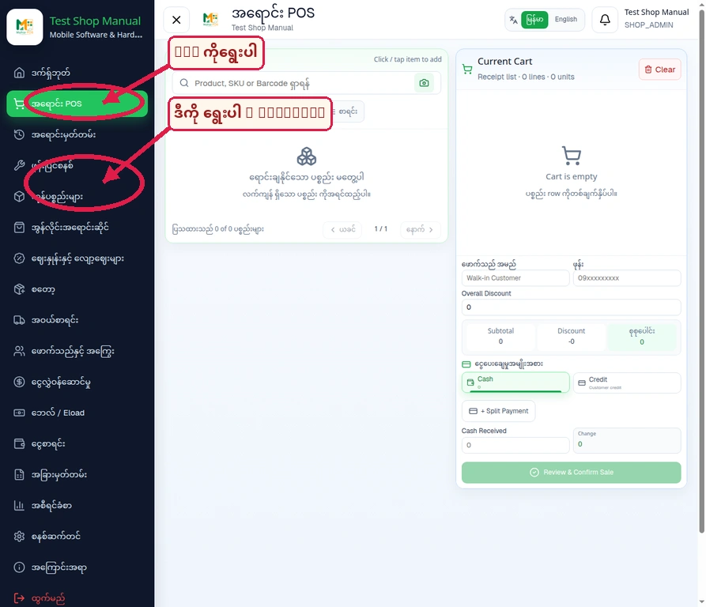
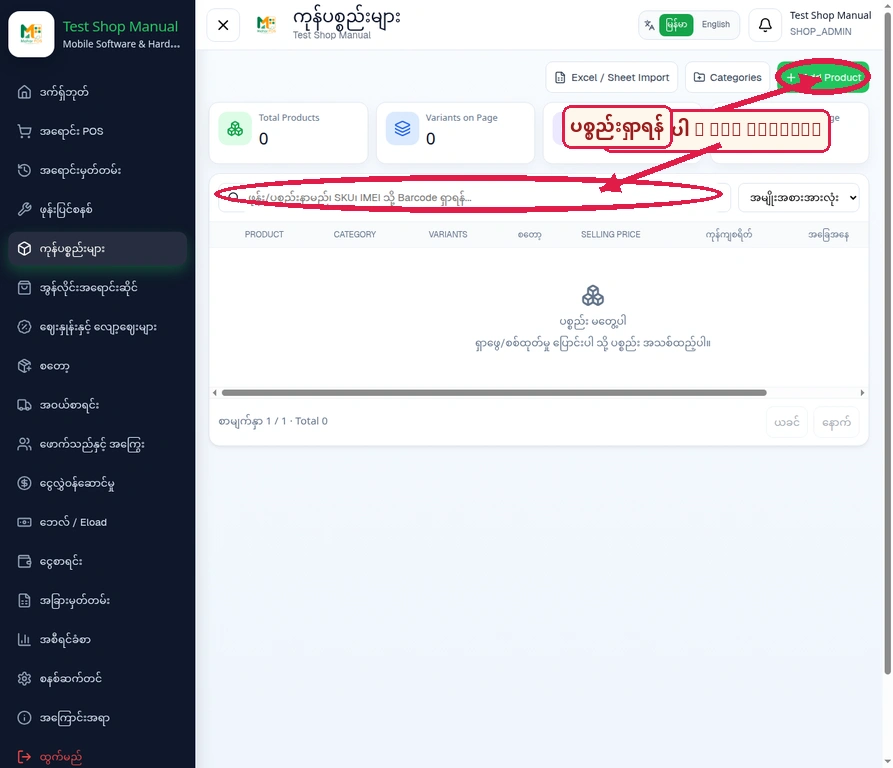
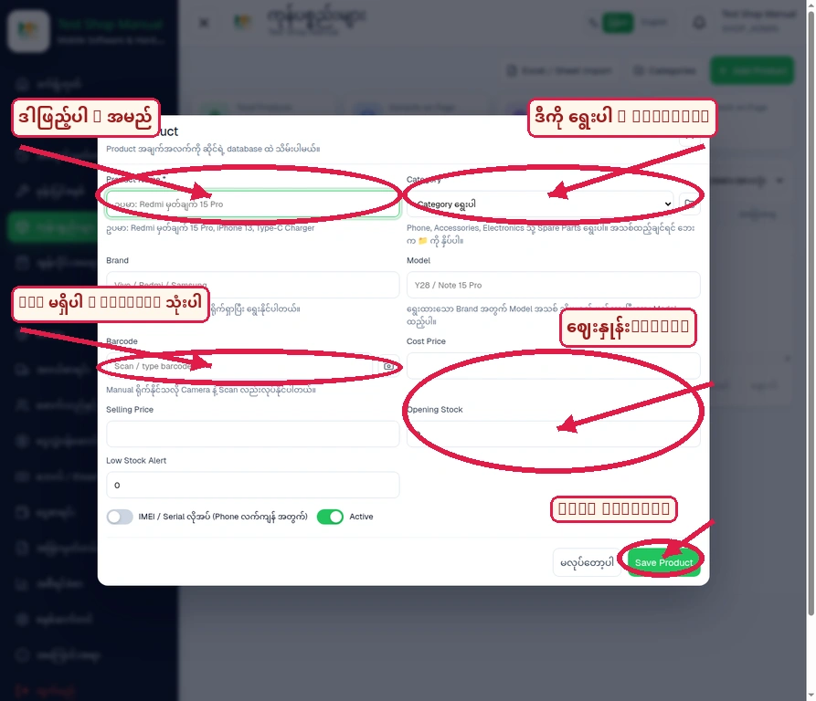
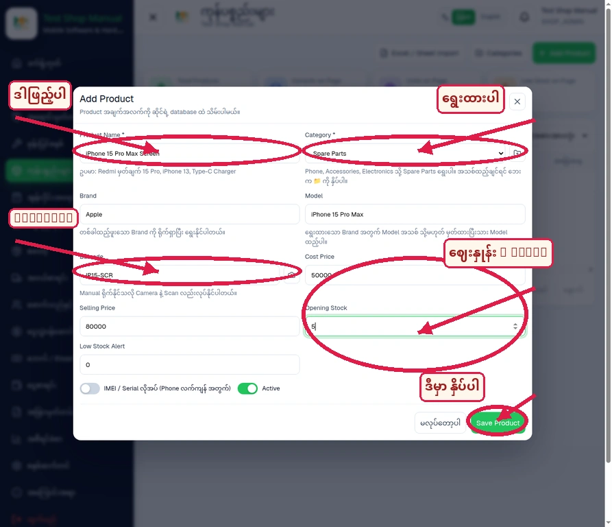
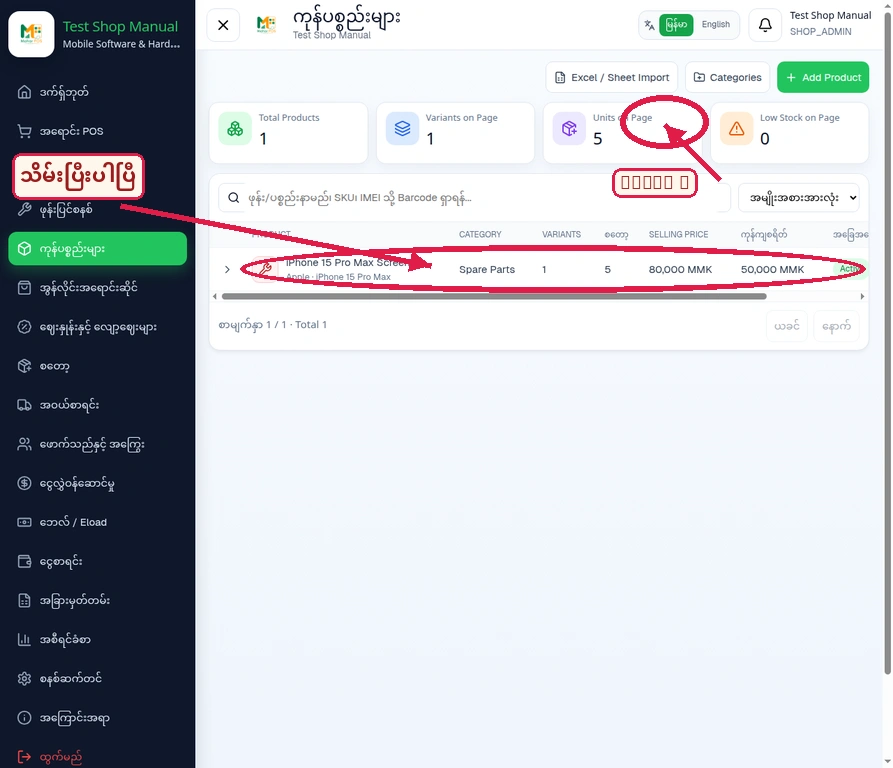
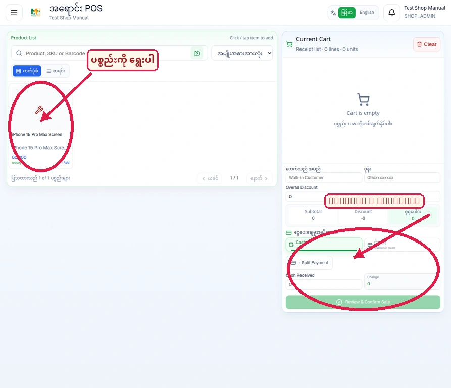
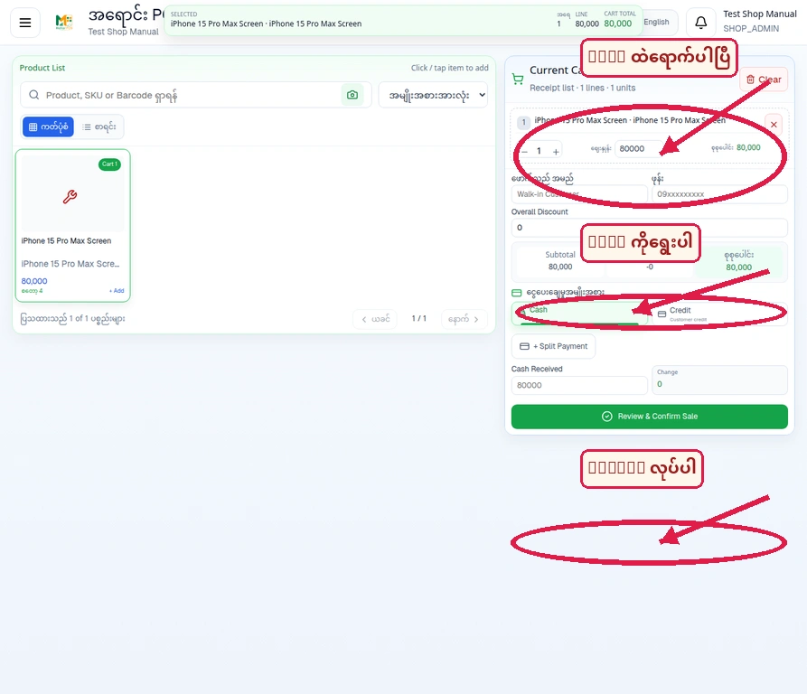
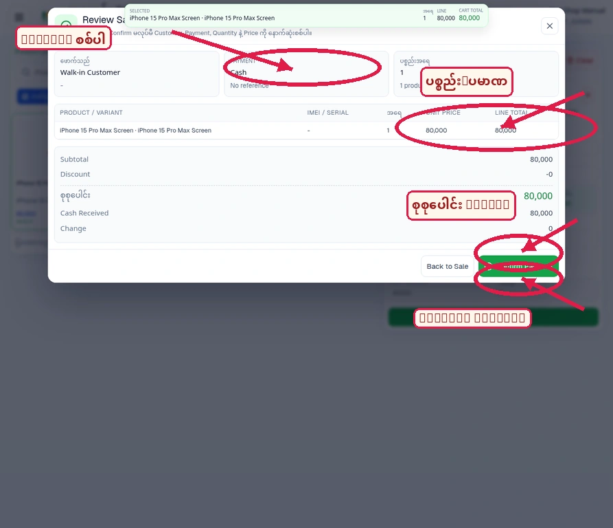
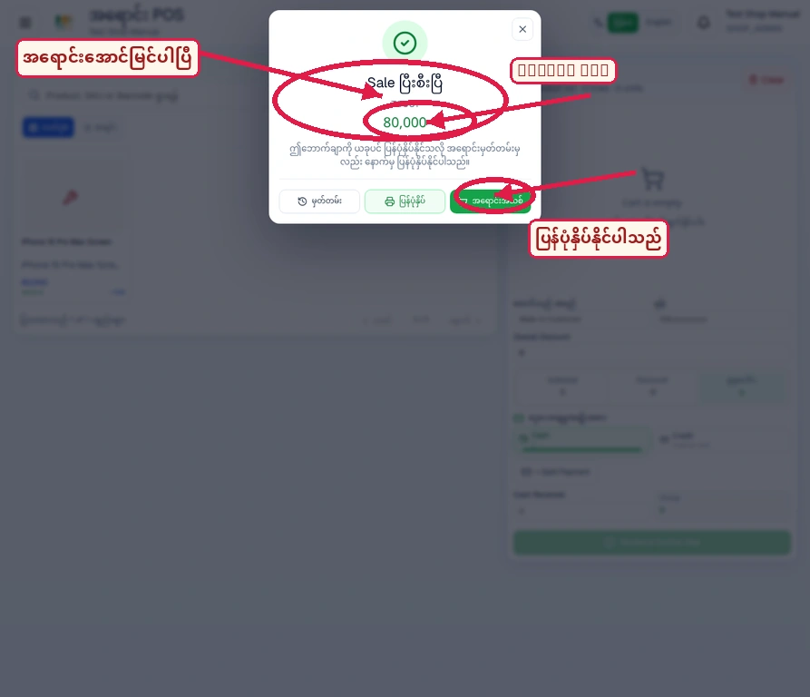

Mahar POS · Visual User Manual
Products ထည့်သွင်းနည်း နှင့် ရောင်းချနည်း
Test Shop Manual အကောင့်တွင် Product တစ်ခုထည့်သွင်းပြီး POS မှ Cash sale တစ်ခု ပြုလုပ်သည့် workflow ကို အနီရောင် arrows, circles နှင့် Myanmar labels များဖြင့် အဆင့်လိုက်ရှင်းပြထားပါသည်။
Products / ItemsSales POSMyanmar annotationsSample transaction: 80,000 MMK
အသုံးပြုထားသော Sample Product: iPhone 15 Pro Max Screen · Identifier/Barcode IP15-SCR · Cost 50,000 MMK · Selling Price 80,000 MMK · Opening Stock 5။
မှတ်ချက်: ဒီ Mahar POS Add Product form တွင် သီးခြား SKU field မရှိသောကြောင့် IP15-SCR ကို Barcode field ထဲတွင် ထည့်ထားပါသည်။ Payment options တွင် ဤ workspace အတွက် Cash နှင့် Credit ကိုတွေ့ရပြီး KPay/Wave သီးခြား option မပေါ်ပါ။
Part 1 · Products ထည့်သွင်းနည်း
01Sidebar မှ သက်ဆိုင်ရာ Menu ကိုရွေးပါ
အရင်ဆုံး ဘယ်ဘက်အပေါ်ရှိ မီနူးခလုတ်ကိုနှိပ်ပြီး ကုန်ပစ္စည်းများ (Products) သို့မဟုတ် အရောင်း POS ကိုရွေးပါ။

အနီရောင် arrow/circle နှင့် Myanmar label များဖြင့် လမ်းညွှန်ထားသည်။
လုပ်ဆောင်ရန်: Products ကိုသွားရန် “ကုန်ပစ္စည်းများ”၊ ရောင်းရန် “အရောင်း POS” ကိုရွေးပါ။
02ကုန်ပစ္စည်းစာမျက်နှာနှင့် Add Product
ကုန်ပစ္စည်းများစာမျက်နှာတွင် Add Product ခလုတ်ကို အပေါ်ညာဘက်၌ တွေ့ရပါမည်။

အနီရောင် arrow/circle နှင့် Myanmar label များဖြင့် လမ်းညွှန်ထားသည်။
လုပ်ဆောင်ရန်: ဒီမှာ နှိပ်ပါ — ပစ္စည်းအသစ်ထည့်ရန် Add Product ကိုနှိပ်ပါ။
03Product Form ကိုဖြည့်ပါ
Product Name၊ Category၊ Brand/Model၊ Barcode/Identifier၊ Cost Price၊ Selling Price နှင့် Opening Stock တို့ကို ဖြည့်ပါ။

အနီရောင် arrow/circle နှင့် Myanmar label များဖြင့် လမ်းညွှန်ထားသည်။
လုပ်ဆောင်ရန်: ဤ UI တွင် သီးခြား SKU field မရှိပါ။ ထို့ကြောင့် SKU IP15-SCR ကို Barcode field ထဲတွင် ထည့်ထားပါသည်။
04Sample Product အချက်အလက်ဖြည့်ထားခြင်း
Sample product အတွက် Name, Category, Brand, Model, Identifier, Cost, Selling Price နှင့် Opening Stock တို့ကို ထည့်ထားသည့်ပုံဖြစ်ပါသည်။

အနီရောင် arrow/circle နှင့် Myanmar label များဖြင့် လမ်းညွှန်ထားသည်။
လုပ်ဆောင်ရန်: Name: iPhone 15 Pro Max Screen · Identifier/Barcode: IP15-SCR · Cost: 50,000 · Price: 80,000 · Stock: 5
05Save ပြီးနောက် Product List ထဲတွင်တွေ့ရခြင်း
Save Product ကိုနှိပ်ပြီးနောက် product သည် Active status ဖြင့် list ထဲသို့ ရောက်လာပါသည်။

အနီရောင် arrow/circle နှင့် Myanmar label များဖြင့် လမ်းညွှန်ထားသည်။
လုပ်ဆောင်ရန်: Product 1 ခု၊ Stock 5 ခု၊ Selling Price 80,000 MMK၊ Cost 50,000 MMK ဟု ပြသပါသည်။
Part 2 · ရောင်းချနည်း
06Sales POS သို့သွားပြီး Product ရွေးပါ
အရောင်း POS စာမျက်နှာတွင် Product List ထဲက iPhone 15 Pro Max Screen ကိုနှိပ်ပြီး cart ထဲသို့ထည့်ပါ။

အနီရောင် arrow/circle နှင့် Myanmar label များဖြင့် လမ်းညွှန်ထားသည်။
လုပ်ဆောင်ရန်: Product ကိုရွေးရန် ဒီနေရာကိုနှိပ်ပါ။ ရောင်းချပြီးနောက် stock သည် 5 မှ 4 သို့ ပြောင်းလာပါမည်။
07Cart နှင့် Payment Method
Cart ထဲတွင် item 1 ခုနှင့် စုစုပေါင်း 80,000 MMK ပေါ်လာပါမည်။ ဤ test workspace တွင် Cash နှင့် Credit ကိုပြသထားပြီး Cash ကိုရွေးထားပါသည်။

အနီရောင် arrow/circle နှင့် Myanmar label များဖြင့် လမ်းညွှန်ထားသည်။
လုပ်ဆောင်ရန်: ဒီကို ရွေးပါ — Cash။ KPay/Wave သည် ဤ POS screen တွင် သီးခြား payment option အဖြစ် မပြသပါ။
08Review Sale နှင့် Confirm Payment
Review & Confirm Sale ကိုနှိပ်ပြီး Customer, Payment, Quantity, Price နှင့် Cash Received ကို နောက်ဆုံးစစ်ပါ။

အနီရောင် arrow/circle နှင့် Myanmar label များဖြင့် လမ်းညွှန်ထားသည်။
လုပ်ဆောင်ရန်: စုစုပေါင်း 80,000 MMK၊ Cash Received 80,000 MMK၊ Change 0 ဖြစ်ကြောင်းစစ်ပြီး Confirm Payment ကိုနှိပ်ပါ။
09Receipt / Confirmation
အရောင်းပြီးဆုံးလျှင် Sale ပြီးစီးပြီ message၊ Receipt number T0001 နှင့် 80,000 MMK တန်ဖိုးကို ပြသပါသည်။

အနီရောင် arrow/circle နှင့် Myanmar label များဖြင့် လမ်းညွှန်ထားသည်။
လုပ်ဆောင်ရန်: အရောင်းမှတ်တမ်းကို နောက်မှ ပြန်ကြည့်နိုင်ပြီး ပြန်ပုံနှိပ်နိုင်ပါသည်။